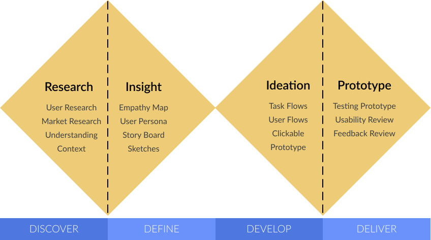

UX designer
Adventure-seeking travelers struggle to easily find local experiences without spending hours doing research before a trip.
TravelEasy is an app that helps connect travelers with local guides all over the world who can provide information on best local eats, best local sceneries, and local experiences that are unique!
A new travel start-up company needs to build a mobile app to help the modern travelers plan their next trip. The goal is to design a mobile app that helps people create memorable travelling experiences.
Travelers struggle to discover local experiences when they travel to an unfamiliar place. Travelers desire to spend the minimum amount of time on researching the foreign city while still gaining the best authentic local experience.
TravelEasy enhances people's travel experience by delivering unique and authentic local experiences based on the traveler's interests and desires without hours of research. We're better because our local guides provides insider tips. We're believable because the more you use the app, the more it learns about your traveling needs.
I used the Double Diamond design process to guide me through product design cycle. The process starts by expanding the understanding of the users needs through research and acquiring research data. Next, the broad data I found through the user research is synthesized, refined, and made meaningful. Through empathy, the problem statement is clearly defined. Ideating solutions that solves the problem in a creative way that resonates with the end-users. Finally deliver a product that is tested and validated with end-users which meets their needs.
In this research project, I planned and conducted 6 qualitative interviews to find out what people's needs are when planning excursions during a vacation trip and what challenges they currently face in meeting those needs. In addition, I collected quantitative data on people's traveling habits via 16 surveys.
"I don't like to spend hours of research before my trip to plan out activities that are interesting to me."
"I need an app that helps me find local hidden gems."
"I wish there was a way to avoid tourist attractions and find authentic local experiences."
Emma needs help finding new local experiences while traveling abroad because she has a lack of time for extensive research.
During the survey I discovered that a majority of individuals find researching travel arrangements an extremely time-consuming and dissatisfying task.
Therefore, I believe that people need help simplifying their research on how to get the most out of trips without spending hours on research and that I might be able to help if I developed an app that would make it easy for them to connect with locals in the area to find the best local experiences.
Travelers struggle to discover local experiences when they travel to an unfamiliar place. Travelers desire to spend the minimum amount of time on researching the foreign city while still gaining the best authentic local experience.
Travelers spent a lot of time planning their trip. Vacationing can be very stressful. TravelEasy can help users organize their trip in a way that is quick and easy. Going forward, I would like to improve the app by adding a chat function which allows users to interact with one another. Another feature I would like to add is the ability to share the itinerary with others, which would help the app get more exposure, and help users be able to plan with their travelmates. The more users on this app, the more hidden gems travelers can find in various destinations across the world.